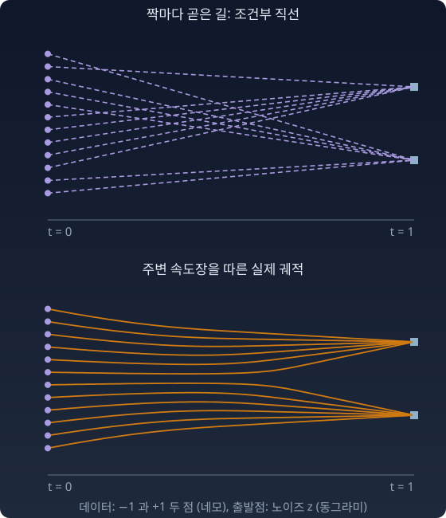

조건부 플로우 매칭: 짝의 직선들로 주변 속도장을 배운다
짝 하나의 직선 위에서 새는 일정한 속도로 난다. 그렇다면 신경망에게 그 직선 속도를 그대로 가르치면 될까? 직선인 것은 짝 하나의 길이고, 신경망이 배우는 속도장은 그 직선들의 평균이다.
조건부 속도와 주변 속도
짝 (z, x) 하나의 직선에서 속도는 일정하다.
v조건부 = x − z.
그런데 신경망이 보는 것은 지금의 위치 xt와 시간 t뿐이다. 어떤 짝이 이 점을 지나고 있는지는 모른다. 한 점을 여러 짝의 직선이 지나가면, 그 점에서 신경망이 내놓을 수 있는 속도는 하나뿐이다.
이 주변 속도장이 연속방정식을 만족하며 노이즈를 데이터로 옮긴다(립먼(Yaron Lipman) 외, 2022). 그리고 이것은 상수가 아니다. t = 0에서는 x0 = z라 z가 정해지면 x는 아무것이나 될 수 있다. v(y, 0) = E[x] − y, 모두 데이터의 평균 쪽을 향한다. t가 1에 가까워지면 한 점을 지나는 짝은 거의 한 봉우리 것뿐이라, 각자 가까운 봉우리를 향한다. 속도장은 위치와 시간에 따라 모양을 바꾼다.

조건부 목표로 주변 속도를 배운다
주변 속도장을 직접 계산하려면 데이터 분포 전체가 필요하다. 대신 짝마다 아는 조건부 목표 x − z에 맞추도록 훈련한다.
같은 입력에 여러 정답이 오면 제곱 오차를 최소로 하는 한 값은 평균, 곧 조건부 기댓값이다. xt의 함수들이 이루는 공간 위로의 직교사영이다. 분포를 모형 위로 옮기는 사영과 모양이 같고, 자는 KL 발산(두 분포가 같은 사건에 매기는 확률이 얼마나 다른지 재는 양)이 아니라 제곱 거리(L²)다. 디퓨전의 잡음 제거 스코어 매칭과 완전히 같은 구조다. 조건부 타깃으로 훈련하면 주변 타깃을 배운다.
짝 하나 (z, x)를 조건으로 붙여 정한 목표로 주변 속도장을 배우는 이 방법을 조건부 플로우 매칭(conditional flow matching, CFM)이라 부른다. 「조건부」는 짝을 정해 놓고 본다는 뜻이다. 이 장의 나머지에서도 이 이름을 쓴다.
불러오는 중…
파이썬
import numpy as np
rng = np.random.default_rng(0)
n = 1_000_000
# 조건부 타깃 x − z 의 평균 = 주변 속도장. 데이터 ±1, z ~ N(0,1)
x = rng.choice([-1.0, 1.0], 4 * n); z = rng.normal(size=4 * n); y = 0.5
for t in [0.2, 0.5, 0.8]:
xt = (1 - t) * z + t * x
near = np.abs(xt - y) < 0.01
v = (np.tanh(t * y / (1 - t)**2) - y) / (1 - t) # 닫힌꼴
s = (t * np.tanh(t * y / (1 - t)**2) - y) / (1 - t)**2 # ∇log p_t
print(f"t={t}: 표본평균 E[x−z|x_t=0.5] {(x - z)[near].mean():.3f} "
f"닫힌꼴 v {v:.3f} y/t + (1−t)/t·∇log p_t {y / t + (1 - t) / t * s:.3f}")
# t=0.2: 표본평균 E[x−z|x_t=0.5] -0.435 닫힌꼴 v -0.431 y/t + (1−t)/t·∇log p_t -0.431
# t=0.5: 표본평균 E[x−z|x_t=0.5] 0.527 닫힌꼴 v 0.523 y/t + (1−t)/t·∇log p_t 0.523
# t=0.8: 표본평균 E[x−z|x_t=0.5] 2.499 닫힌꼴 v 2.500 y/t + (1−t)/t·∇log p_t 2.500
같은 점 0.5에서 속도가 t = 0.2에는 −0.43(가운데 쪽), t = 0.8에는 +2.5(봉우리 +1 쪽)다. 조건부 목표 x − z는 짝마다 일정하지만, 주변 속도장은 시간에 따라 부호까지 바뀐다.
마지막 칸 y/t + (1−t)/t·∇log pt 는 스코어로 속도를 만드는 식이다. 표본으로 잰 평균과 맞아떨어지는 까닭은 이 장의 「속도와 스코어의 다리」 절에서, 안개 낀 점에서 스코어 방향으로 걸으면 원래 점의 평균에 닿는다는 트위디 공식으로 유도한다.
수확
“직선인 것은 짝 하나의 길이다. 신경망이 배우는 주변 속도장은 그 점을 지나는 짝들의 직선 속도를 평균한 것이라, 위치와 시간에 따라 변한다.”
문제 3. 교차로에 화살표 하나
한 교차로를 지나는 차 가운데 70%는 동쪽(+1)으로, 30%는 서쪽(−1)으로 간다. 교차로 바닥에 화살표 하나만 그릴 수 있다. 화살표의 값 a(동쪽이 +, 서쪽이 −)는 차들의 실제 방향과의 제곱 오차 평균이 가장 작게 고른다. a는 얼마인가? 차가 많이 가는 쪽을 가리키는 a = +1과 견주라.
함께 풀기

당연히 +1이요. 열에 일곱이 동쪽으로 가니까 동쪽을 가리켜야죠.

a = +1일 때 제곱 오차의 평균을 계산해 봐요.
동쪽 차는 0, 서쪽 차는 (−1 − 1)² = 4라서 0.3 × 4 = 1.2요.
a = 0이면요?

0.7 × 1 + 0.3 × 1 = 1.0이에요. 아무 쪽도 안 가리키는 화살표가 더 낫다고요?

0.7(1 − a)² + 0.3(1 + a)²를 a로 미분해서 0으로 두면 a = 0.7 − 0.3 = 0.4야. 오차는 0.84로 셋 중 가장 작아. 제곱 오차를 가장 작게 하는 값 하나는 평균이야.
화살표 0.4를 그대로 따라가는 차는 한 대도 없는데, 값 하나로 말해야 하면 그게 최선이네요. 조교가 반 전체 과제 점수를 숫자 하나로 보고하라고 하면 평균을 내는 거랑 같아요.
문제 4. 두 점으로 가는 속도장
데이터가 두 점 ±1(반반), 노이즈가 z ~ N(0, 1)이다. 선형 경로 xt = (1 − t)z + tx에서 (가) xt = y를 본 뒤 x = +1일 사후확률을 구하고, 주변 속도장 v(y, t)의 닫힌꼴을 구하라. (나) v(0.2, 0.6)을 계산하라.
함께 풀기
이건 쉬워요. 직선 경로의 속도는 x − z로 상수라고 했으니까, 그걸 그대로 쓰면…
y = 0.2, t = 0.6에 있는 새의 x − z가 얼마예요?
x = +1이면 z = (0.2 − 0.6)/0.4 = −1이라 x − z = 2이고, x = −1이면 z = (0.2 + 0.6)/0.4 = 2라 x − z = −3이에요. …같은 점에 두 가지 속도가 있네요.
그럼 상수라는 게 뭐였어요? 짝 하나의 속도가 상수라는 거였구나. 신경망은 이 점에서 하나만 말해야 하니까, 교차로 화살표처럼 2와 −3의 가중평균이에요.
섞는 비율은 내가 구할게. x = +1일 때 xt = (1 − t)z + t라서 y가 나올 우도(그 x가 이 y를 낼 확률밀도)는 exp(−(y − t)²/2)예요. 그래서 사후확률은 (1 + tanh(ty))/2, E[x | y] = tanh(ty)예요.
그걸로 (나)를 계산하면요?
v = (E[x | y] − y)/(1 − t) = (tanh(0.12) − 0.2)/0.4 = −0.20이에요. 가운데 쪽으로 가요.
이상한데. y = 0.2는 +1 쪽에 있는데 60% 왔을 때 오히려 0 쪽으로 돌아간다고? 위젯에서 t = 0.6쯤 되면 화살표가 벌써 봉우리 쪽을 보던데.

우도를 다시 볼게요. z에 (1 − t)가 곱해져 있으니까 y의 조건부 분포는 N(tx, (1 − t)²)예요. 저는 분산을 1로 썼어요. 확률변수의 배율을 밀도에 반영 안 한, 문제 2랑 같은 실수예요.
고치면 E[x | y] = tanh(ty/(1 − t)²), v(y, t) = (tanh(ty/(1 − t)²) − y)/(1 − t)예요. (나)는 (tanh(0.75) − 0.2)/0.4 = 1.09예요. 사후확률로는 +1이 0.82라 (2와 −3을 0.82 : 0.18로 섞으면) 1.09가 나와요. 맞아요.
위 파이썬에서 y를 0.2로, t를 0.6으로 바꿔 표본으로도 재 봐요.
표본평균이 1.088이에요. 닫힌꼴 1.088이랑 맞아요.
확률론 수업의 변수변환 공식이 딱 이 자리에서 필요한 거였네요. 야코비안을 잊으면 분산이 틀리고, 분산이 틀리면 방향까지 뒤집혀요.
문제 5. 한 걸음에 그린 그림
데이터가 x ~ N(4, 0.5²), 노이즈가 z ~ N(0, 1)이고, 둘을 제비뽑기로(서로 독립으로) 짝지어 학습했다. 학습이 완벽해 신경망이 주변 속도장 v(y, t)를 정확히 안다고 하자. 이 설정에서 주변 속도장은 v(y, t) = (E[x | xt = y] − y)/(1 − t), E[x | xt = y] = 4 + (0.25t/Vt)(y − 4t), Vt = (1 − t)² + 0.25t²이다. 생성은 노이즈 한 점에서 출발해 dy/dt = v(y, t)를 오일러 방법(지금 위치의 속도로 한 걸음만큼 곧장 가기를 되풀이)으로 푼다. (가) t = 0에서 1까지 한 걸음에 가면 샘플들은 어떤 분포가 되는가? (나) 두 걸음(0 → 0.5 → 1)이면 샘플의 표준편차는 얼마인가? 데이터의 표준편차 0.5와 견주라.
함께 풀기
한 걸음이면 도착점은 z + v(z, 0)이에요. t = 0이면 V가 1이라 E[x | z] = 4, 속도는 4 − z예요. 그러니까 도착점은 z + 4 − z = 4. …모든 샘플이 정확히 4예요.

학습이 완벽한데 그림이 전부 똑같이 나와요? 코드로 돌려도 표준편차가 0이에요.
t = 0의 속도는 무엇을 보고 정한 속도였죠?
출발할 때는 z만 보고는 어느 x로 갈지 전혀 모르니까, 짝들의 속도를 평균하면 다 데이터 평균 쪽을 향해. 교차로 화살표가 0.4를 가리켰던 것처럼 “평균으로는 맞는” 방향일 뿐이야. 그 방향으로 끝까지 곧장 가면 모두 평균에 닿지.
(나)는요?
첫 걸음에 y = z + 0.5(4 − z) = 2 + 0.5z예요. t = 0.5에서 V = 0.3125라 E[x | y] = 4 + 0.4(y − 2), 속도는 6.4 − 1.2y예요. 한 걸음 더 가면 3.2 + 0.4y = 4 + 0.2z, 표준편차 0.2예요. 걸음을 10번으로 나누면 0.43, 100번이면 0.49로 0.5에 다가가요.

속도장이 정확한데도 큰 걸음이 빗나가는 건, 실제 흐름선이 곧지 않아서야. 짝마다 길은 직선인데, 그 길들을 평균한 흐름은 처음엔 평균 쪽으로 모였다가 나중에 다시 퍼지도록 휘어 있어. 출발점의 속도로 끝까지 가면 그 휨을 못 따라가.
이미지 생성이라면 어떤 그림이 나올까요?
샘플이 모두 평균 이미지 쪽으로 몰리니까 뿌옇게 평균 낸 그림이요. 걸음을 너무 적게 잡으면 흐릿해진다는 게 이거네요. 마감 직전에 친구들 답을 평균 내서 내면 누구의 답도 아닌 어정쩡한 답이 되는 거랑 같아요.